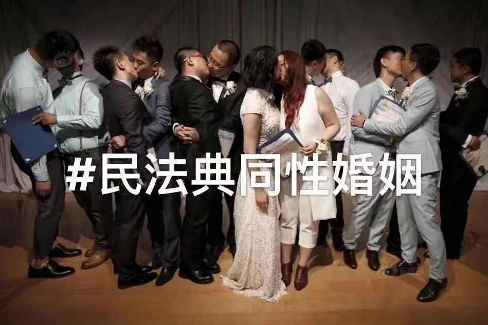
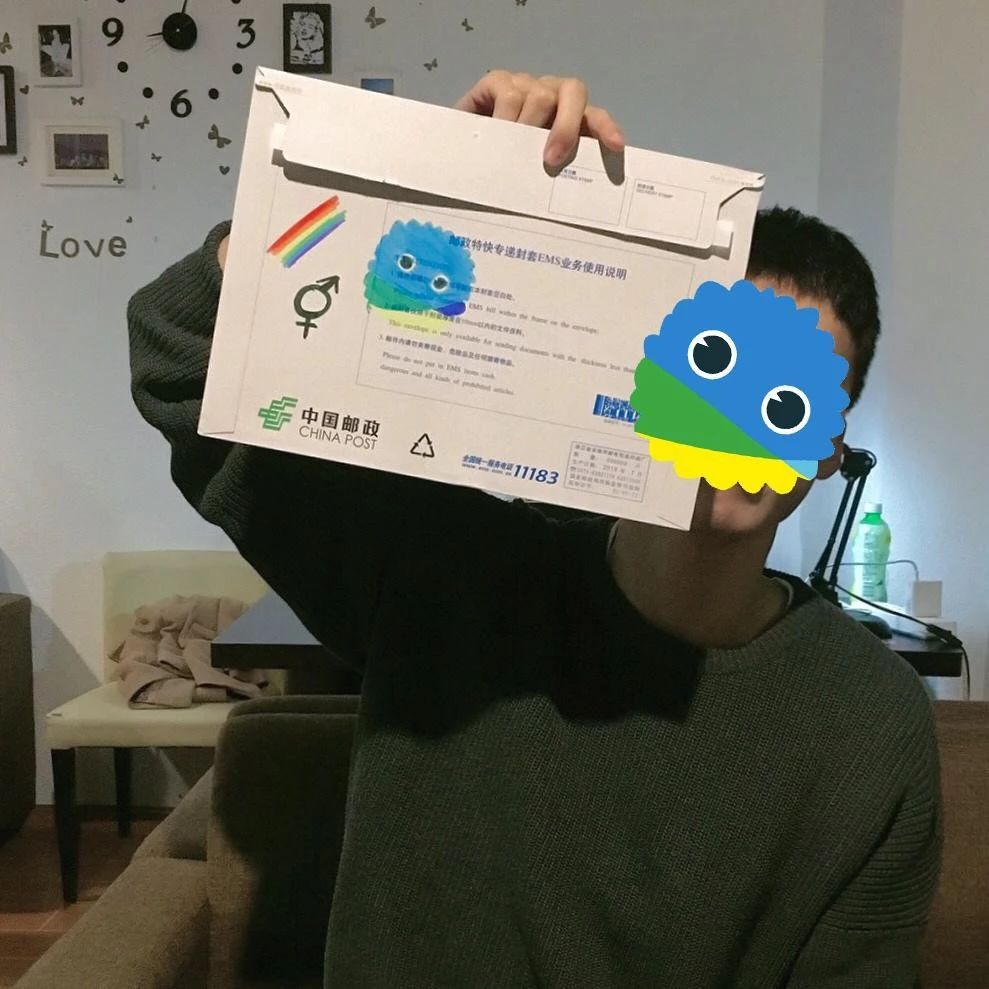
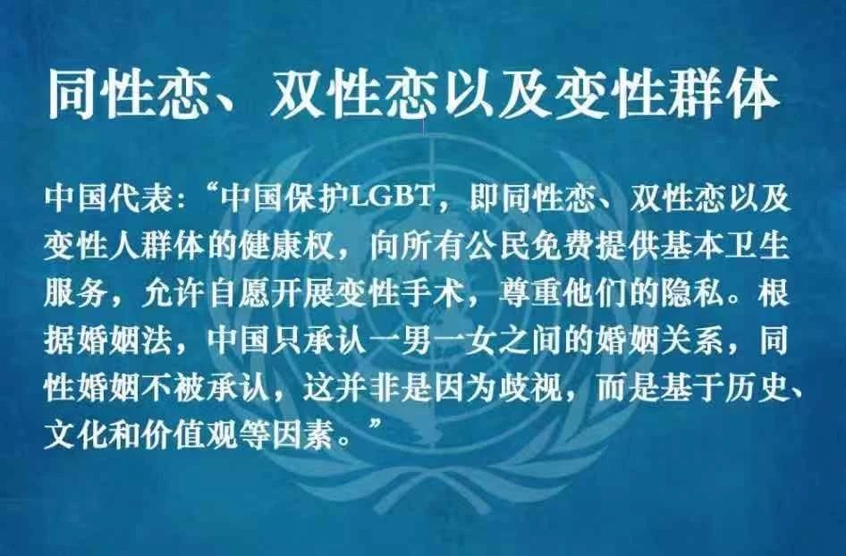
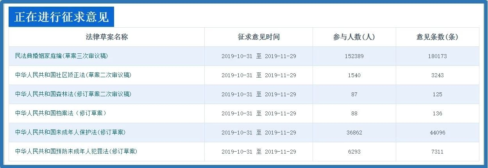

“改变”，从现在开始 — #同性婚姻法典化# 城西彩虹信箱

[图片来源：LGBT权促会]
大家好，我叫奥利弗，是一名顺性别性少数，我希望有一天在这片土地上我能和未来的ta结婚，一同饱受婚姻的折磨。民法典婚姻法三审稿意见征集还有7天就要截至了，在这最后的一周，我们希望能再发一次声，改变婚姻法。因此在11月23日（周六），我们在城西设立了彩虹信箱，期待与您一同发声。
“让我们一同改变婚姻法”

[图片来源：瓜瓜]
关于本次倡导
时间：可在 11 月 23 日（本周六）15:00-22:00之间的任意时间段空降
地点：城西某堕落街旁，近港湾家园
位置：以短信通知为准
内容：在瓜瓜的协助下寄出一封民法典意见
参与倡导的各位无需携带任何物品，我们会提供一切寄信所需要的物料，但我们欢迎各位在信件内分享自己的生命、爱情故事，讲述愿意参与此次倡导的促因。我们也鼓励各位拍照分享。
不论您是公开、或未公开的社群成员，还是愿意促进同性婚姻的友同人士，我们都欢迎并期待各位的到来 (๑•̀ㅂ•́)و✧。
为了瓜瓜更好地与您联系，请在文底点击阅读原文获取报名表单。
一个简要的回顾
2018年11月6日，在联合国UPR第三轮审议中，中国代表就LGBT+群体做出回应：“中国保护LGBT的健康权… 根据婚姻法，中国只承认一男一女之间的婚姻关系，同性婚姻不被承认，这并非是因为歧视，而是基于历史、文化和价值观等因素。”
2019年8月21日，全国人大法工委发言人臧铁伟（首次）公开回应一二审稿社群诉求。
[图片来源：联合国官方公众号]
2019年10月31日，民法典婚姻家庭编三审稿在中国人大网发，正式开始意见征集。
11月6日，爱成家与 LGBT 权促会相继发出了发声倡议，截至11月22日，网上提议参与人数已达到 152389 人，意见条数达 180173 条。

[图片来源：http://www.npc.gov.cn/flcaw/index.html]
除了线上意见征集外，纸质意见也将是法工委参考的重要依据，本次彩虹信箱也因此而生。加入瓜瓜，让我们将同性婚姻加入民法典吧！